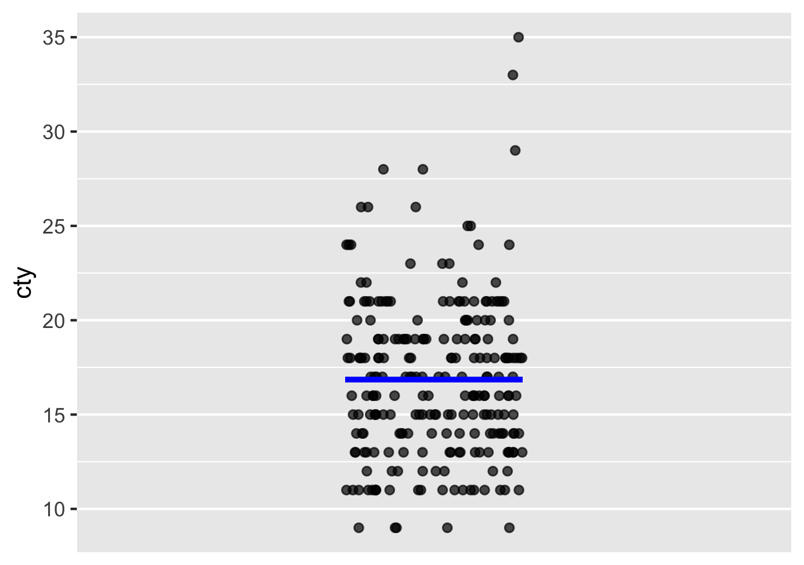
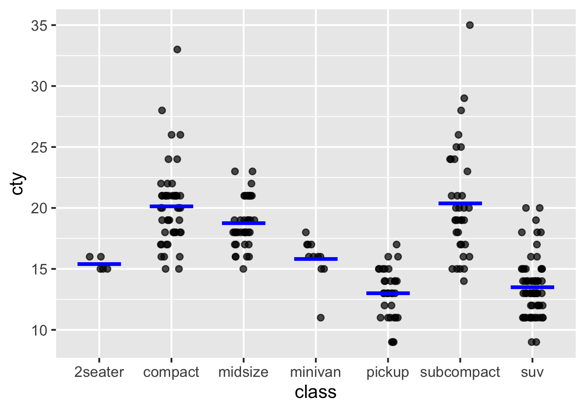
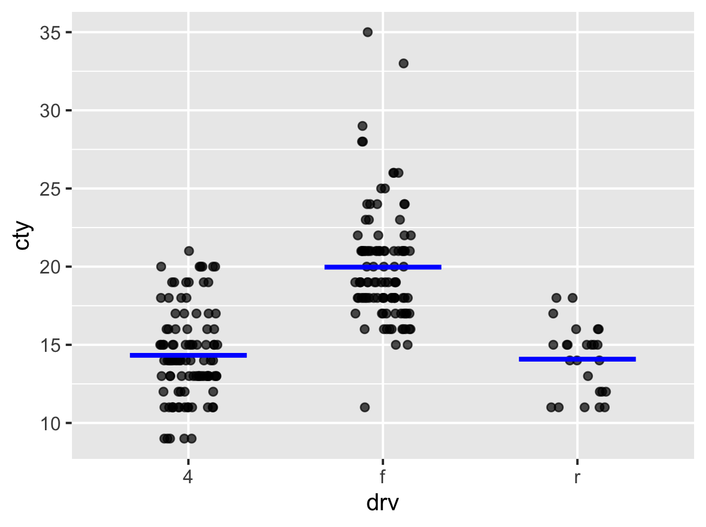

mpg |>
summarize(avg_cty = mean(cty))8 Visualizing Mean Models
In the prior chapters, we have established the overall mean as the best model when we have no other explanatory variable, and the category mean as the simplestbest model* when we have a categorical explanatory variable.
In this chapter we use the point_plot function to visualize these models.
8.1 Business scenario – fuel efficiency of vehicle fleet
In Chapter 5, we used a set of numbers to play a game. Now we will extend the idea to actual data frames.
You manage a company that operates a fleet of rental cars used primarily for city driving. The fleet includes a wide range of vehicles, from compact sedans to larger SUVs, each with different city fuel efficiency.
For planning purposes, the company must commit to one single number to represent the expected city fuel efficiency of a car drawn at random from the fleet. This number is used repeatedly—for estimating fuel costs, setting reimbursement rates, and budgeting operating expenses.
The company does not know in advance which specific car will be rented on a given day. Some days the car will be more fuel-efficient than expected, and on other days less fuel-efficient.
If the company assumes fuel efficiency that is too high, it underestimates fuel costs. If it assumes fuel efficiency that is too low, it overestimates costs and ties up capital unnecessarily. Larger errors in either direction are more costly than smaller ones.
The decision is not evaluated based on a single rental. Instead, it is judged by how well it performs across many rentals over time.
In this setting, the question becomes: “What single number should the company commit to so that total long-run cost is as small as possible?”
The data about your fleet is in the mpg data. It has many variables, but we focus here on the variable cty showing us the city miles per gallon of each car.
Assuming (artificially) that the company is only allowed to use the variable cty what single number should they commit to?
8.1.1 Committing to one number for the entire fleet
Based on our discussion in Chapter 5, we know that the the company should commit to the average of the variable cty. We can compute the average using the summarize and mean functions as the code below shows.
We can also visualize it thus:
mpg |>
point_plot(cty ~ 1,
annot = "model",
interval = "none")This generates Figure 8.1.

The model shows the scatter plot of the points as well as a line. This line represents the model. You can see that it falls exactly at the average of the cty values.
Take a look at the code:
The tilde expression
cty ~ 1in the code sets cty ans=d the response variable and, by placing 1 on the RHS, shows that we have no explanatory variables.
The part
annot = "modelCauses a model to be visualized as well. We know that the mean is our model and this plot visualizes it by drawing a line at the average cty.
For now, you can ignore:
interval = "none"So, if we have to commit to one number as our estimate for the city mileage irrespective of other details about a car like its class, drv or anything else, our best commitment is to the overall average. As we have seen in Chapter 7, this is a model with just a response variable and no explanatory variables. We can write it as Equation 8.1.
\[ \widehat{\text{cty}} = 16.9 \tag{8.1}\]
We placed a hat on cty because this is just an estimate or a model value and not an actual data point.
8.2 We can do better with more information
Instead of having to commit to one single number for the fuel efficiency for the entire fleet, what if we could use a different number for each class of vehicle? In out mpg data set, we have vehicles of different classes – variable class. This has values like Compact, SUV and Pickup truck.
Based on Chapter 6, we know that for each class of vehicle, we should commit to the average of cty for that class.
We can compute these averages easily:
mpg |>
summarize(avg_cty = mean(cty), .by = class)Note how the above code is very similar to what we would use for computing the overall average, but we have added:
.by = classTo show that we do not want just one average for the whole data frame, but we want separate averages for each class of vehicle. As simple as that!
Let us visualize this model:
mpg |>
point_plot(cty ~ class, annot = "model",
interval = "none")Figure 8.2 shows the model visualization.

How do we express this model as an equation like we did with Equation 8.1?
Equation 8.2 shows the model as an equation.
\[ \widehat{\text{cty}} = \begin{cases} 20.1 & \text{if } \text{class} = \text{"compact"} \\ 18.8 & \text{if } \text{class} = \text{"midsize"} \\ 13.5 & \text{if } \text{class} = \text{"SUV"} \\ 15.4 & \text{if } \text{class} = \text{"2seater"} \\ 15.8 & \text{if } \text{class} = \text{"minivan"} \\ 13.0 & \text{if } \text{class} = \text{"pickup"} \\ 20.4 & \text{if } \text{class} = \text{"subcompact"} \end{cases} \tag{8.2}\]
Instead of class, we can have drv as the explanatory variable as well. Here are code snippets that will compute the model and plot it.
mpg |>
summarize(avg_cty = mean(cty), .by = drv)Note that we only had to change the .by to reflect that we are now computing averages by drv.
mpg |>
point_plot(cty ~ drv, annot = "model",
interval = "none")We just changed the RHS of the tilde expression to drv instead of class.
Figure 8.3 shows the visualization.

Equation 8.3 shows the model in equation form.
\[ \widehat{\text{cty}} = \begin{cases} 20.0 & \text{if } \text{drv} = \text{"f"} \\ 14.3 & \text{if } \text{drv} = \text{"4"} \\ 14.1 & \text{if } \text{drv} = \text{"r"} \\ \end{cases} \tag{8.3}\]
The mpg data frame has another column fl to represent the fuel type of the vehicle. We now want to use fl as the explanatory variable. Try out the following using the above as examples.
- Write R code to compute the average of cty for each fuel type
- Write R code to visualize the model with cty as the response variable and fl as the explanatory variable.
- Write out the model equation for this scenario.